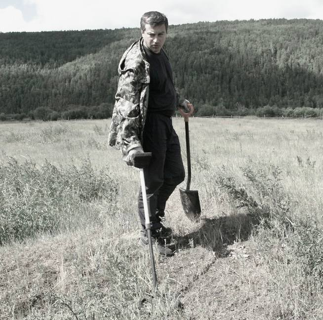
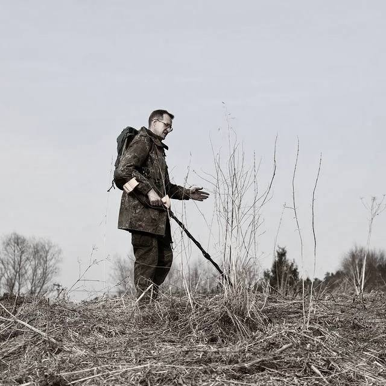
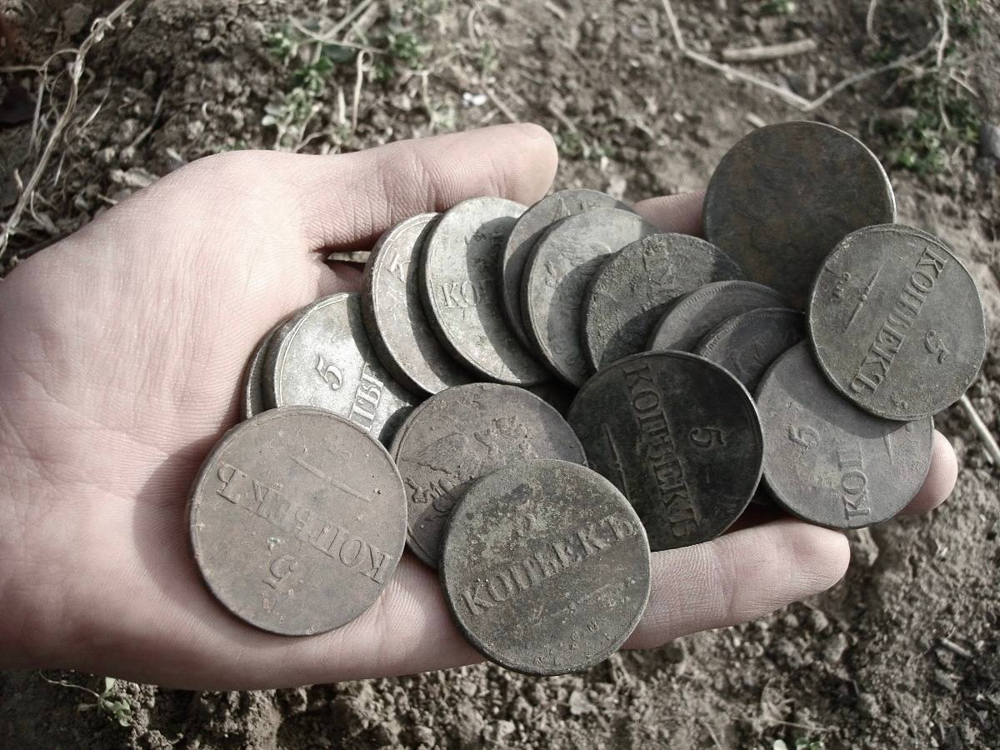

Деревня «Бурхай»
Бурхай - исчезнувший населённый пункт в Иркутском районе Иркутской области России на территории Голоустненского муниципального образования.
Населённый пункт, предположительно, возник в конце XVIII-начале XIX веков как три бурятские улуса, позже объединившиеся. Большинство местных жителей занимались коневодством, заготовкой кормовых растений. Согласно
переписи
населения СССР 1926 года Бурхайские улусы входили в состав Больше-Голоустенского сельсовета Иркутского района, там насчитывалось 115 хозяйств, 458 жителей (в том числе 237 мужчин и 221 женщина), в основном, буряты. Населённый пункт Бурхай отмечался как жилой на картах 1964 и 1984 годов. На топографической карте Генштаба СССР 1985 года Бурхай указан уже как нежилой.
Архивные материалы



«Раскопки на месте деревни "Бурхай"»
Дополнительная информация:
Координаты: 52°07′13″ с. ш. 105°20′32″ в. д
Деревня «Бурхай» на карте России
*Если у вас имеется какая-либо информация и/или фото-/видеоматериалы, касающиеся деревни, описанной на сайте, то свяжитесь с нами через раздел «Контактая информация»